好きな漫画
私が好きな漫画を紹介します。
ワンピース
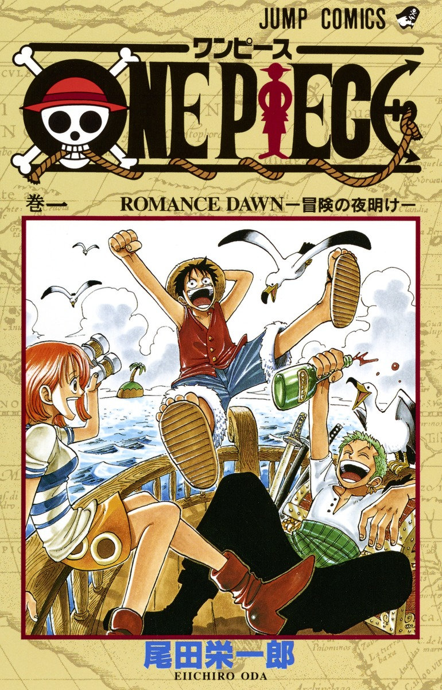「ワンピース」は、尾田栄一郎によって作られた冒険漫画で、海賊のモンキー・D・ルフィと仲間たちが「ワンピース」と呼ばれる財宝を探し、壮大な冒険を繰り広げる物語です。仲間との絆や夢を追い求める姿が描かれ、友情、勇気、冒険がテーマとなっています。多くのキャラクターと深いストーリーが魅力で、世界中で愛されている作品です。
怪獣8号
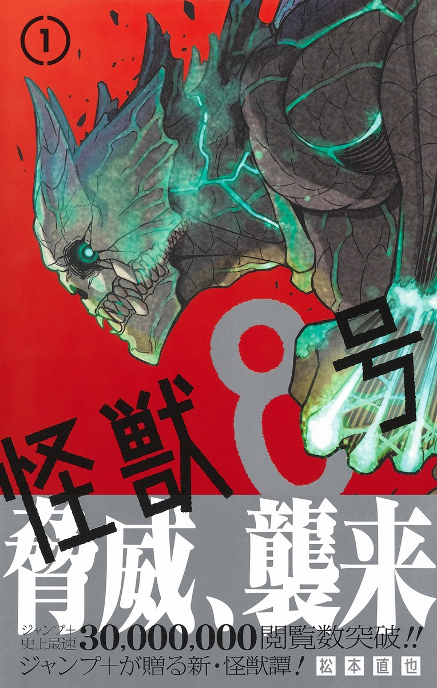「怪獣8号」は、松本直也による漫画で、巨大な怪獣が人々を脅かす世界を舞台にしています。主人公のカフカ・フカミは、怪獣を倒す「怪獣対策部」に入隊を目指すが、ある日、自身が怪獣に変身する能力を持つことが発覚します。彼はその力を使い、怪獣との戦いに挑みながら、仲間たちとともに人々を守るために戦います。アクションやユーモア、ドラマが絶妙に組み合わさった作品で、緊迫感と感動が魅力です。
ルリドラゴン
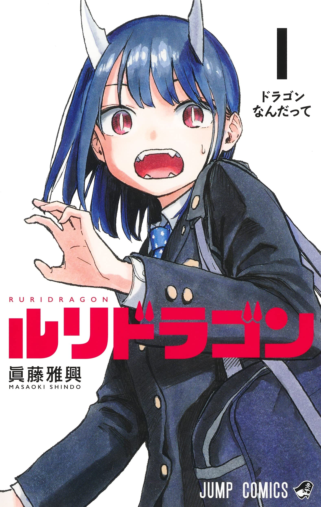人間と龍のハーフだったルリが、体の変化を受け入れながら生活していくファンタジーコメディ。 ところどころに入る絶妙なツッコミや、火を吹いたり、角を生やしたりするルリを、意外とあっさり受け入れていく周囲の様子が、物語をより面白くさせている。 ゆるっとした時が流れる学園ドラマでもあります。
他の好きな漫画
 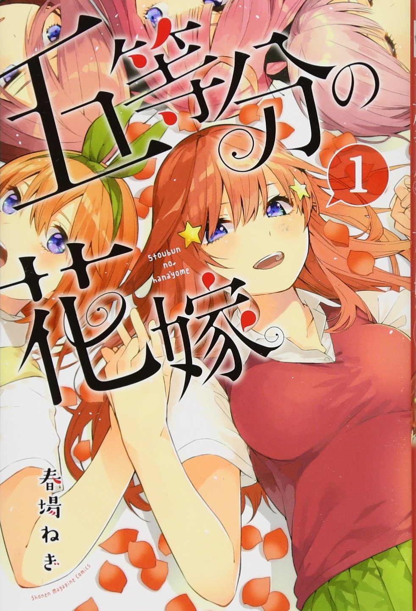
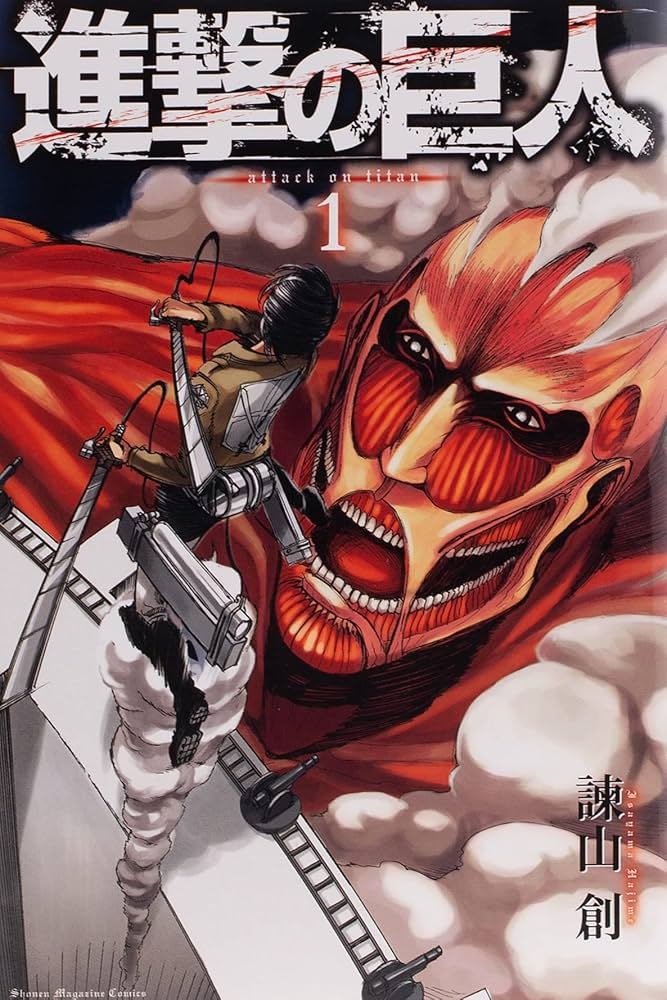
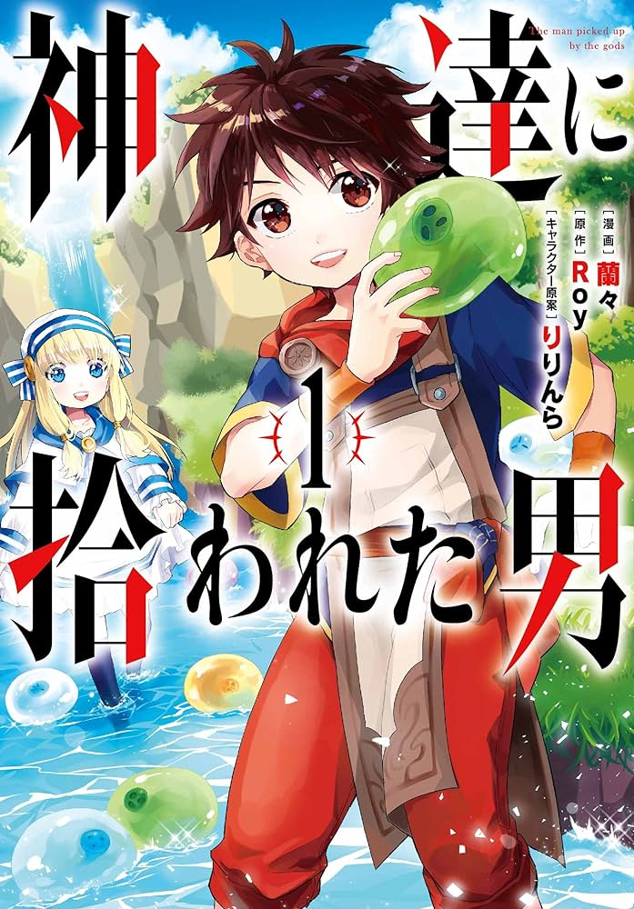
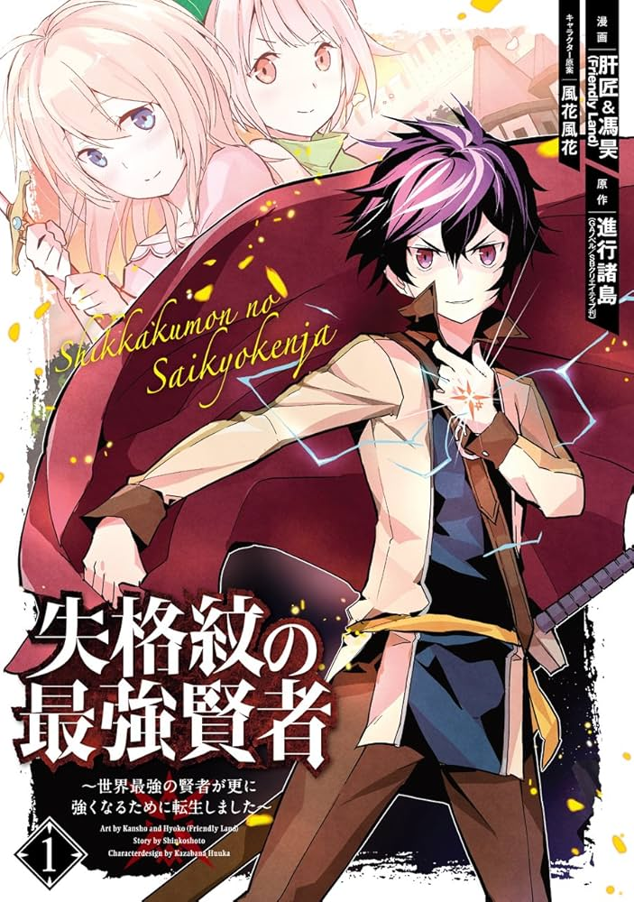
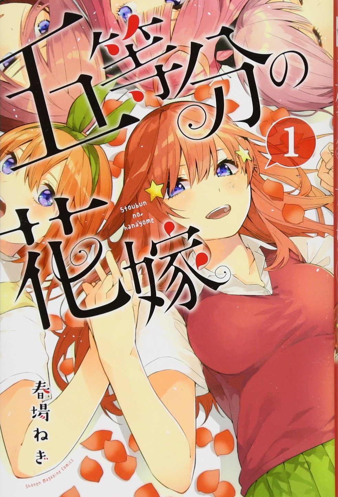
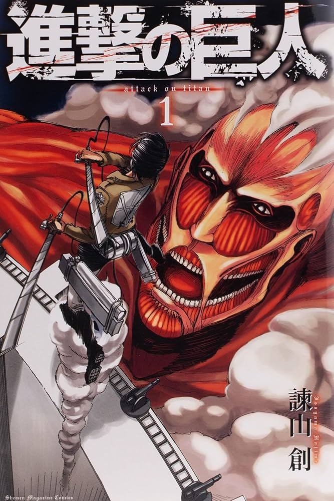
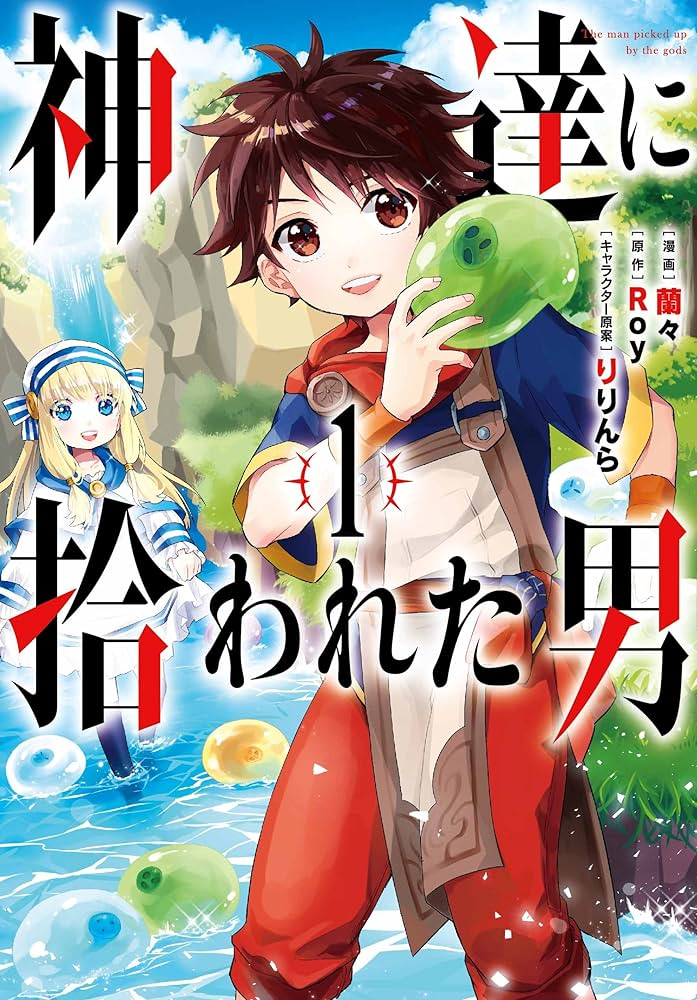
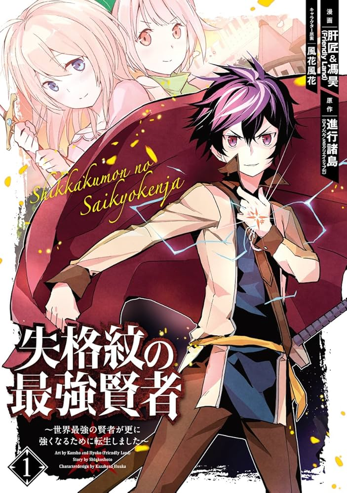